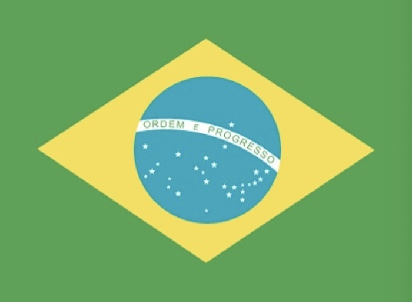

Benvindo ao Brasil.
Following more than three centuries under Portuguese rule, Brazil gained its independence in 1822, maintaining a monarchical system of government until the abolition of slavery in 1888 and the subsequent proclamation of a republic by the military in 1889. Brazilian coffee exporters politically dominated the country until populist leader Getulio VARGAS rose to power in 1930. By far the largest and most populous country in South America, Brazil underwent more than a half century of populist and military government until 1985, when the military regime peacefully ceded power to civilian rulers. Brazil continues to pursue industrial and agricultural growth and development of its interior. Having successfully weathered a period of global financial difficulty in the late 20th century, Brazil was seen as one of the world's strongest emerging markets and a contributor to global growth. The awarding of the 2014 FIFA World Cup and 2016 Summer Olympic Games, the first ever to be held in South America, was seen as symbolic of the country's rise. However, from about 2013 to 2016, Brazil was plagued by a sagging economy, high unemployment, and high inflation, only emerging from recession in 2017. Former President Dilma ROUSSEFF (2011-2016) was removed from office in 2016 by Congress for having committed impeachable acts against Brazil's budgetary laws, and her vice president, Michel TEMER, served the remainder of her second term. In October 2018, Jair BOLSONARO won the presidency with 55 percent of the vote and assumed office on 1 January 2019.
green with a large yellow diamond in the center bearing a blue celestial globe with 27 white five-pointed stars; the globe has a white equatorial band with the motto ORDEM E PROGRESSO (Order and Progress); the current flag was inspired by the banner of the former Empire of Brazil (1822-1889); on the imperial flag, the green represented the House of Braganza of Pedro I, the first Emperor of Brazil, while the yellow stood for the Habsburg Family of his wife; on the modern flag the green represents the forests of the country and the yellow rhombus its mineral wealth (the diamond shape roughly mirrors that of the country); the blue circle and stars, which replaced the coat of arms of the original flag, depict the sky over Rio de Janeiro on the morning of 15 November 1889 – the day the Republic of Brazil was declared; the number of stars has changed with the creation of new states and has risen from an original 21 to the current 27 (one for each state and the Federal District)
note: one of several flags where a prominent component of the design reflects the shape of the country; other such flags are those of Bosnia and Herzegovina, Eritrea, and Vanuatu
Eastern South America, bordering the Atlantic Ocean
10 00 S, 55 00 W
South America
total: 8,515,770 sq km
land: 8,358,140 sq km
water: 157,630 sq km
note: includes Arquipelago de Fernando de Noronha, Atol das Rocas, Ilha da Trindade, Ilhas Martin Vaz, and Penedos de Sao Pedro e Sao Paulo
mostly tropical, but temperate in south
alumina, bauxite, beryllium, gold, iron ore, manganese, nickel, niobium, phosphates, platinum, tantalum, tin, rare earth elements, uranium, petroleum, hydropower, timber
213,445,417 (July 2021 est.)
noun: Brazilian(s)
adjective: Brazilian
White 47.7%, Mulatto (mixed White and Black) 43.1%, Black 7.6%, Asian 1.1%, Indigenous 0.4% (2010 est.)
Portuguese (official and most widely spoken language)
note: less common languages include Spanish (border areas and schools), German, Italian, Japanese, English, and a large number of minor Amerindian languages
Roman Catholic 64.6%, other Catholic 0.4%, Protestant 22.2% (includes Adventist 6.5%, Assembly of God 2.0%, Christian Congregation of Brazil 1.2%, Universal Kingdom of God 1.0%, other Protestant 11.5%), other Christian 0.7%, Spiritist 2.2%, other 1.4%, none 8%, unspecified 0.4% (2010 est.)
conventional long form: Federative Republic of Brazil
conventional short form: Brazil
local long form: Republica Federativa do Brasil
local short form: Brasil
etymology: the country name derives from the brazilwood tree that used to grow plentifully along the coast of Brazil and that was used to produce a deep red dye
federal presidential republic
name: Brasilia
geographic coordinates: 15 47 S, 47 55 W
time difference: UTC-3 (2 hours ahead of Washington, DC, during Standard Time)
daylight saving time: +1hr, begins third Sunday in October; ends third Sunday in February
note: Brazil has four time zones, including one for the Fernando de Noronha Islands
etymology: name bestowed on the new capital of Brazil upon its inauguration in 1960; previous Brazilian capitals had been Salvador from 1549 to 1763 and Rio de Janeiro from 1763 to 1960
civil law; note - a new civil law code was enacted in 2002 replacing the 1916 code
Brazil is the eighth-largest economy in the world, but is recovering from a recession in 2015 and 2016 that ranks as the worst in the country’s history. In 2017, Brazil`s GDP grew 1%, inflation fell to historic lows of 2.9%, and the Central Bank lowered benchmark interest rates from 13.75% in 2016 to 7%.
The economy has been negatively affected by multiple corruption scandals involving private companies and government officials, including the impeachment and conviction of Former President Dilma ROUSSEFF in August 2016. Sanctions against the firms involved — some of the largest in Brazil — have limited their business opportunities, producing a ripple effect on associated businesses and contractors but creating opportunities for foreign companies to step into what had been a closed market.
The succeeding TEMER administration has implemented a series of fiscal and structural reforms to restore credibility to government finances. Congress approved legislation in December 2016 to cap public spending. Government spending growth had pushed public debt to 73.7% of GDP at the end of 2017, up from over 50% in 2012. The government also boosted infrastructure projects, such as oil and natural gas auctions, in part to raise revenues. Other economic reforms, proposed in 2016, aim to reduce barriers to foreign investment, and to improve labor conditions. Policies to strengthen Brazil’s workforce and industrial sector, such as local content requirements, have boosted employment, but at the expense of investment.
Brazil is a member of the Common Market of the South (Mercosur), a trade bloc that includes Argentina, Paraguay and Uruguay - Venezuela’s membership in the organization was suspended In August 2017. After the Asian and Russian financial crises, Mercosur adopted a protectionist stance to guard against exposure to volatile foreign markets and it currently is negotiating Free Trade Agreements with the European Union and Canada.
$1,877,942,000,000 (2019 est.)